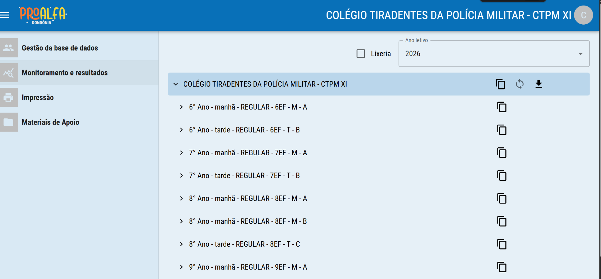
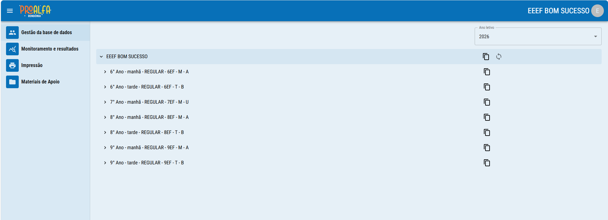

Atualização da base a partir do diário eletrônico da rede.
Os dados devem ser atualizados no diário eletrônico, e sincronizados no {{herby.produto}} conforme indicado abaixo:

Os dados devem ser atualizados no diário eletrônico, e sincronizados no {{herby.produto}} conforme indicado abaixo. Note que só é possível sincronizar a nível de escola.
